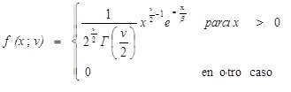

Chi-Cuadrado:
Esta distribucion de probabilidad continua presenta un unico parametro v que corresponde a los grados de libertad.
En este sentido, Walpole et. al., (1999; 2012) definen que toda variable aleatoria continua X tiene una distribucion chi cuadrada,
v grados de libertad, si su funcion de densidad esta dada por:
